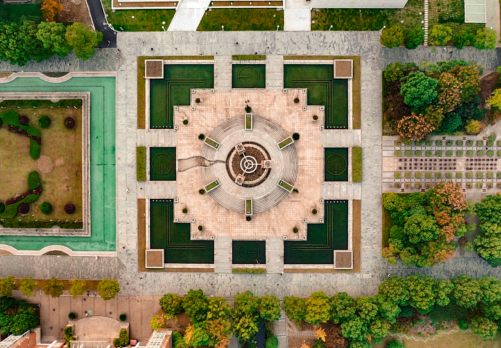
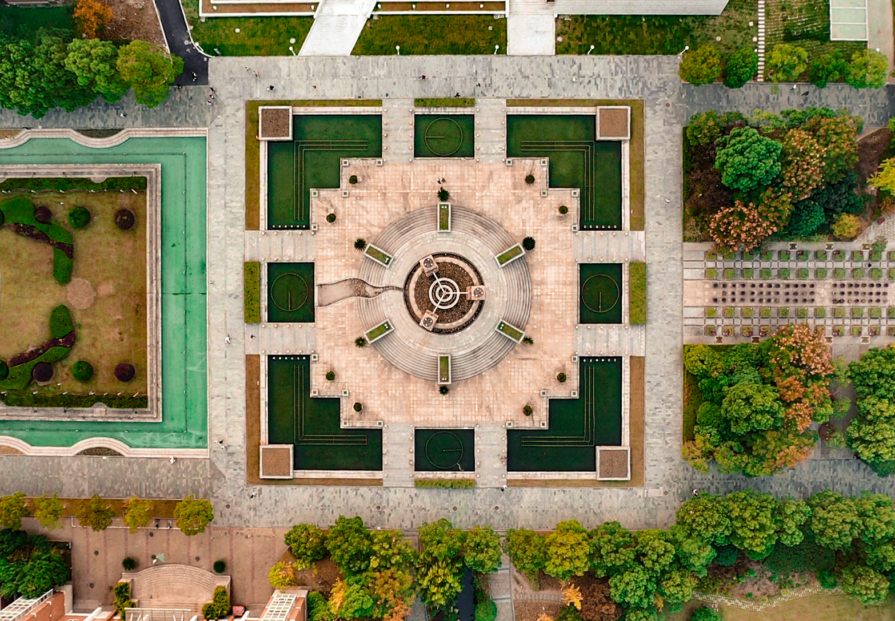

杭电十景
长虹揽月
巨碟邀星
雅湖云影
书海风荷
兰亭春晓
艺苑秋歌
丛鱼听学
三省问天
藤廊寄梦
正心休读
位于学校正南，又称“南大门”，是学校标志性建筑，曾有亚洲“第一校门”之称。 高近30米，校名“杭州电子科技大学”苍劲有力、矗然而立；宽75米，如一道长虹擎起优美的弧线，将紧邻的月雅湖深情揽入怀中。
学校前身为创建于1956年的杭州航空工业财经学校，长期隶属于电子工业部、信息产业部等中央部委，现为浙江省与国家国防科技局共建高校，电子信息与国防军工特色明显，“敢上九天揽月”的精神一直激励着杭电人笃学力行、守正求新，朝着“双一流”梦想奋勇前进。 “长风破浪会有时，直挂云帆济沧海”，万千师生由此而入，探究真理，问鼎学术，开启征程，走向未来。

位于学校西北角，可以同时容纳5000人，曾经是杭州市第二大室内体育馆。 体育馆坚若磐石、恢弘大气，外型酷似飞碟，被学子们戏称为杭电“UFO”。这里不仅是学校各大体育赛事的承办地，更是开学典礼、毕业典礼、大型文艺晚会及全国性大学生学科竞赛总决赛的见证地。 作为曾经的万马篮球队的主场，这里还承办过第八届全国残疾人运动会轮椅篮球赛，《奔跑吧兄弟》第二季拍摄也在此进行。 2022年杭州亚运会，这里将作为击剑比赛的主场馆。 名人荟萃，星光璀璨，熠熠生辉，仿佛在激励莘莘学子们强基固本、行稳致远。


位于学校东南角、南大门入口处。水光潋滟，景色空蒙，月雅湖犹如一枚碧玉镶嵌于“亚洲第一校门”之旁，又似一位佳人依偎在郁郁葱葱的小树林中。 碧波荡漾之际，紫藤廊桥点缀；绿草茵茵之间，杭电精神常在，“国家大事、千万尽力”，老校长的临终遗言，激发着一代又一代杭电人的责任担当。一弯露台探入湖中， 几只白鹅飘浮水面，远远望去，恰似伊人在水一方。景名语出朱熹《观书有感》：“半亩方塘一鉴开，天光云影共徘徊。问渠哪得清如许？为有源头活水来”。 闪耀在月雅湖面上的天光和云影，仿佛在告诉每一位杭电学子，书山有路，学海无涯，只有认真读书，时时补充新知识，才能心灵澄明，不断到达新境界。
位于学校南大门至图书馆之间中轴线，500只水缸，10万朵荷花，是夏日校园最壮观的风景。从南大门进来，校名石、问鼎、图书馆纵深推进，四周教学科研大楼林立，喷水池环绕交汇，尽显大学之大、学问之深。 春夏之际，“小荷才露尖尖角”，勤学之子犹如初生之荷，在书海的映照下焕发勃勃生机。旖旎的池畔风荷与庄严的图书馆相互映照，清淡的荷香与高雅的书香相互氤氲。 每年毕业季恰逢花季，“接天莲叶无穷碧，映日荷花别样红”，临别的学子驻足留影、依依惜别，书馆、荷影、人面交相辉映、美不胜收，此情此景，终身难忘。


位于月雅湖东北角小山坡上、绿树掩映下。此亭乃仿文一校区“小兰亭”所建，寄托了杭电人对老校区的依依怀恋情怀。 文一校区为全国400家绿化先进单位之一，古色古香的行政楼前是典雅精致的中心花园，老一辈杭电人发扬艰苦创业精神，用勤劳的双手护土叠石， 砌阶敷径，广种佳木，间植花卉，各别点缀，多有蕴涵，形成了“士子苑”“小兰亭”等无数学子魂牵梦萦的著名景点。
随着本世纪初新校区启用、办学主体转移，对老校区的怀念日渐成为师生校友心头挥之不去的情结。 新一代杭电人秉承传统，弘扬文化，开拓创新，在月雅湖畔堆土成丘、聚沙成塔， 1：1复制了小兰亭。“春眠不觉晓，处处闻啼鸟”，此处虽弹丸之地，然落英缤纷，层林尽染，曲径通幽，移步换景。学子们在此间或咏或叙，或思或憩，或仰望星空，是为校园最幽处。

位于学校东北角，学生文化活动中心。这里是校团委、学生会、学生社团最重要的文化活动阵地，也是校园人文艺术荟萃之地， 曾举办过第七届中国艺术节、大学生电影节，是“高雅艺术进校园”的重要演出基地。杭电素有原创音乐文化基因，跨界培育了不少校园原创歌手， 从摇滚巨星郑钧、音乐才子杨一、音乐小精灵陈悠悠到“中国最强音”刘瑞琦，文理结合、艺工交叉，使杭电成为工科院校中的艺术奇葩。 这里孕育了1900原创影音工作室、红色家园网站、焦点摄影社等品牌社团，已成为杭电原创艺术人才的“孵化器”。
位于第九、十教研楼与第十一、十二教研楼之间。东门进来，有一条清溪缓缓流经，溪水清澈，景物奇秀，风光旖旎，是谓东溪。 溪岸杨柳依依，卵石铺地，长廊蜿蜒，曲桥拱立。溪中锦锂成群，自由嬉闹，惹人怜爱。侧耳倾听，教学楼内书声朗朗；倚栏俯看，东溪锦鲤泼刺戏水。
课余闲暇，学子浅坐岸边，凭栏投饵，数百尾金鳞红鱼结队往来，宛如游学少年，日夜熏陶，似有灵性，人鱼同乐，好不惬意。 清华大学老校长梅贻琦先生曰，“学校犹水也，师生犹鱼也，其行动犹游泳也，大鱼前导，小鱼尾随，是从游也”。
位于校园中轴线上的问天广场，乃学校正中心标志性大型雕塑。巨石堆砌的方形台基上，三根石柱擎天而立，上有圆轮环绕连接， 象征着中国古代“天圆地方”“外圆内方”的哲学思想和人格境界。柱身刻有甲骨等符号，分别代表过去、现在和未来，象征时光的车轮滚滚向前，不断轮回。 中间一根不锈钢圆形针管直插云霄，象征着杭电人“格物致理、穷究自然”的探索精神。子曰“吾日三省吾身”，屈原亦有《天问》之作，于此处，思前贤，低头可躬身自问，仰头可探究苍穹。


 



位于学生生活区“文一苑”校友主题公园。廊长百余米，蜿蜒于宿舍楼下，上覆紫藤，每到春天，花开满廊，别有韵味。 这里是生活区闹中取静的独特一隅，紫藤花下，光影斑驳，三三两两的学子，或休憩闲谈，或弹琴歌唱，或沉浸书海， 或冥思闲想，光影流转，人来人往，紫藤花年复一年的绽放，而廊间镌刻的校友寄语，激励着学子不断追求梦想，超越自我。
杭电被誉为“中国IT企业家的摇篮”，走出了阿里巴巴、熊猫、海尔、长虹、海信、京东方等一批知名集团的掌门人。校友们的励志寄语， 漫步其间，与那些耳熟能详的知名校友来一场隔空的思想碰撞，繁华似锦中多少的青涩梦想在这里萌芽。


位于学校西南角，是绿荫环抱中的一处校园逸境，正心休读园内种植着上千种绿植花卉，一年四季绿树成荫、花团锦簇、鸟语花香、摇曳生姿。 这里花草树木与独具匠心的景观小品相映成趣，古朴的白墙黑瓦隐藏在万绿丛中，成群的红色锦鲤嬉戏于小桥流水间，虽是方寸之间， 也有一步一景，是师生休闲小憩、静心读书的绝佳之地。园内特别设计建造了梅园、兰园、竹园和菊园，梅、兰、竹、菊被誉为花中“四君子”， 是文人墨客托物言志，表达清雅澹泊、坚韧高洁品格的绝佳题材，也是杭电人所追求的“正心诚意”修为的最佳诠释，漫步其间， 既领略了自然美景，又能静心凝思、自我审视，是学校廉政文化教育的最重基地。正心休读园是杭电融思想性、教育性、知识性和艺术性为一体的文化育人之地。